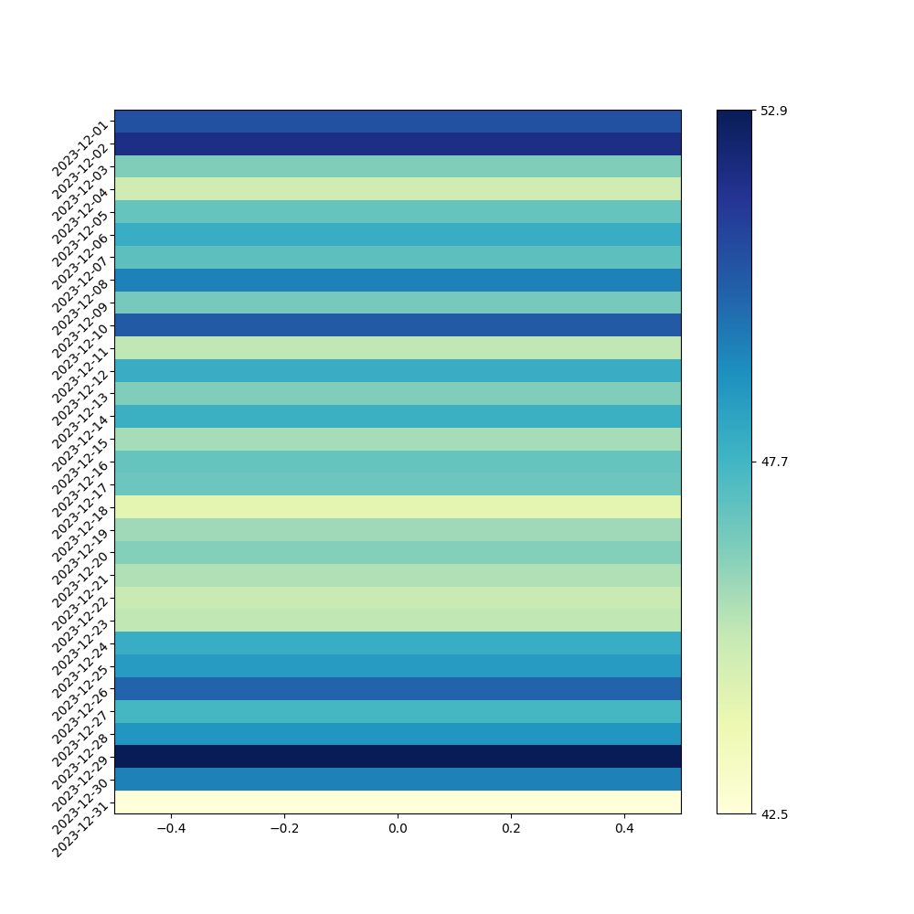
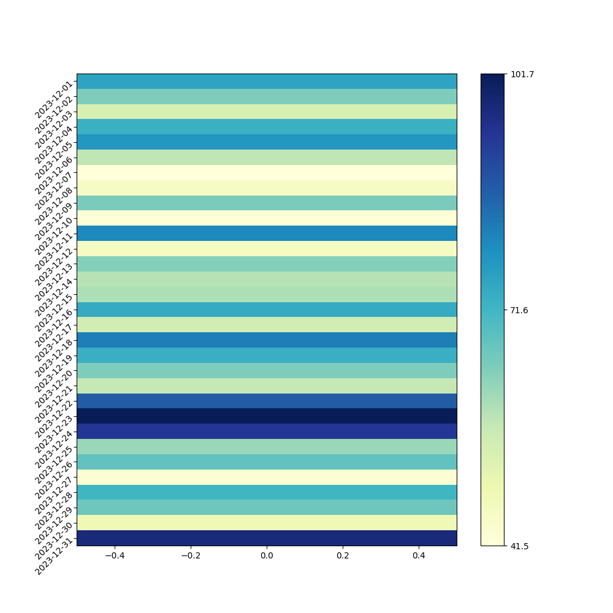
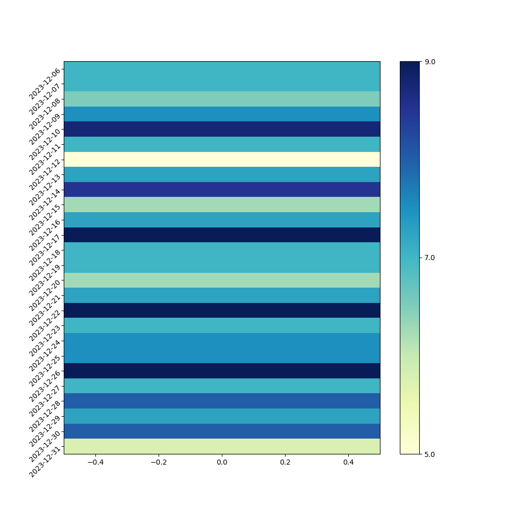
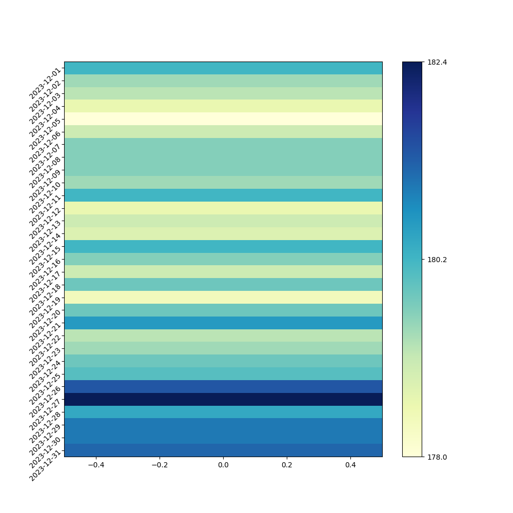

Posts tagged "health":
Health Update December 2023
I think that it might be useful for my future self to see my current health data, so I am going to provide health updates every month.
The raw data for December 2023 are as follows:
| [2023-12-01 Fri 09:57] | 180.2 | 176.3 | 50.7 | 46.4 | 75.2 | 75.6 | | | | | [2023-12-02 Sat 07:27] | 179.4 | 176.4 | 51.9 | 46.4 | 64.3 | 75.5 | | | | | [2023-12-03 Sun 09:44] | 179.2 | 176.4 | 46.4 | 46.4 | 53.2 | 75.5 | | | | | [2023-12-04 Mon 07:33] | 178.6 | 176.4 | 44.8 | 46.4 | 72.7 | 75.5 | | | | | [2023-12-05 Tue 08:48] | 178 | 176.4 | 46.9 | 46.4 | 77.8 | 75.5 | | | | | [2023-12-06 Wed 07:29] | 179 | 176.4 | 48 | 46.4 | 57.4 | 75.4 | 7 | 7.0 | | | [2023-12-07 Thu 10:32] | 179.6 | 176.4 | 47.1 | 46.4 | 41.5 | 75.2 | 7 | 7.0 | | | [2023-12-08 Fri 07:16] | 179.6 | 176.4 | 49.4 | 46.4 | 45.1 | 75.1 | 6.5 | 6.8 | | | [2023-12-09 Sat 07:41] | 179.6 | 176.4 | 46.6 | 46.4 | 64.6 | 75.0 | 7.5 | 7.0 | | | [2023-12-10 Sun 09:41] | 179.4 | 176.4 | 50.4 | 46.5 | 41.8 | 74.9 | 8.75 | 7.3 | | | [2023-12-11 Mon 09:12] | 180.2 | 176.5 | 45.2 | 46.5 | 80.2 | 74.9 | 7 | 7.3 | | | [2023-12-12 Tue 08:50] | 178.6 | 176.5 | 48 | 46.5 | 45.6 | 74.8 | 5 | 7.0 | | | [2023-12-13 Wed 08:56] | 179 | 176.5 | 46.4 | 46.5 | 63.4 | 74.7 | 7.25 | 7.0 | | | [2023-12-14 Thu 09:53] | 178.8 | 176.5 | 47.9 | 46.5 | 58.3 | 74.6 | 8.5 | 7.2 | | | [2023-12-15 Fri 07:23] | 180.2 | 176.5 | 45.7 | 46.5 | 59.3 | 74.6 | 6.25 | 7.1 | | | [2023-12-16 Sat 07:22] | 179.6 | 176.5 | 46.9 | 46.5 | 73.8 | 74.6 | 7.25 | 7.1 | | | [2023-12-17 Sun 10:01] | 179 | 176.5 | 46.8 | 46.5 | 54.6 | 74.5 | 9 | 7.2 | | | [2023-12-18 Mon 07:15] | 179.8 | 176.6 | 44.1 | 46.5 | 81.8 | 74.5 | 7 | 7.2 | | | [2023-12-19 Tue 07:22] | 178.4 | 176.6 | 45.8 | 46.5 | 72.8 | 74.5 | 7 | 7.2 | | | [2023-12-20 Wed 06:31] | 179.8 | 176.6 | 46.3 | 46.5 | 64.3 | 74.4 | 6.25 | 7.2 | | | [2023-12-21 Thu 09:12] | 180.6 | 176.6 | 45.5 | 46.5 | 56.6 | 74.4 | 7.25 | 7.2 | | | [2023-12-22 Fri 07:53] | 179.2 | 176.6 | 45 | 46.4 | 87.1 | 74.4 | 9 | 7.3 | | | [2023-12-23 Sat 06:53] | 179.4 | 176.6 | 45.2 | 46.4 | 101.7 | 74.5 | 7 | 7.2 | | | [2023-12-24 Sun 09:31] | 179.8 | 176.6 | 48 | 46.4 | 93.5 | 74.6 | 7.5 | 7.3 | migraine, sweating | | [2023-12-25 Mon 07:29] | 180 | 176.6 | 48.6 | 46.5 | 61.3 | 74.6 | 7.5 | 7.3 | | | [2023-12-26 Tue 07:52] | 181.4 | 176.7 | 50.1 | 46.5 | 67.6 | 74.5 | 9 | 7.4 | | | [2023-12-27 Wed 07:53] | 182.4 | 176.7 | 47.6 | 46.5 | 42.7 | 74.4 | 7 | 7.3 | | | [2023-12-28 Thu 07:40] | 180.4 | 176.7 | 48.8 | 46.5 | 71.6 | 74.4 | 8 | 7.4 | | | [2023-12-29 Fri 16:12] | 181 | 176.7 | 52.9 | 46.5 | 66 | 74.3 | 7.25 | 7.4 | | | [2023-12-30 Sat 09:16] | 181 | 176.7 | 49.4 | 46.5 | 48.2 | 74.2 | 8 | 7.4 | | | [2023-12-31 Sun 06:47] | 181.2 | 179.7 | 42.5 | 47.3 | 97.1 | 65.5 | 5.75 | 7.3 | | #+TBLFM: @>$3vmean(@<<$2..@>$2);%.1f :: @>$5vmean(@<<$4..@>$4);%.1f :: @>$7vmean(@<<$6..@>$6);%.1f :: @>$9vmean(@<<$8..@>$8);%.1f ::
The resting heart rate was fairly stable and the average for the month was 47.3.

My heart rate variability averaged at 65.5 which is about 20 points higher than the average person of my age of 61.

My sleep averaged at 7.3 hours which is satisfactory for me.

My weight has been rising regularly during the year from around 165 pounds at the start of the year but ending at just under 180 pounds. I am not happy about this although I look and feel fine!!
